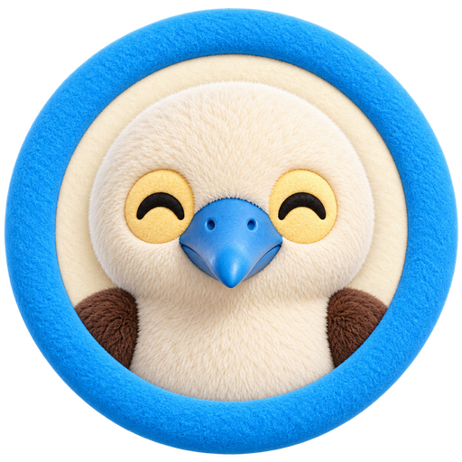
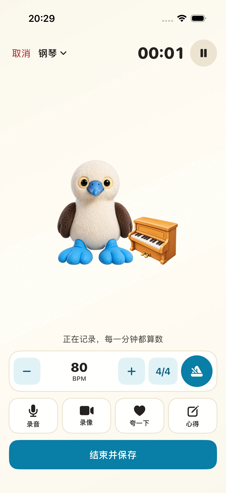
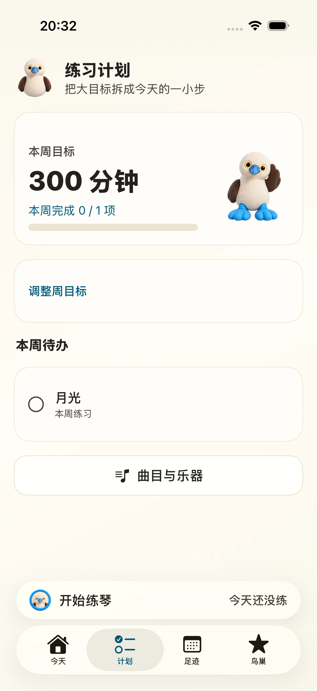
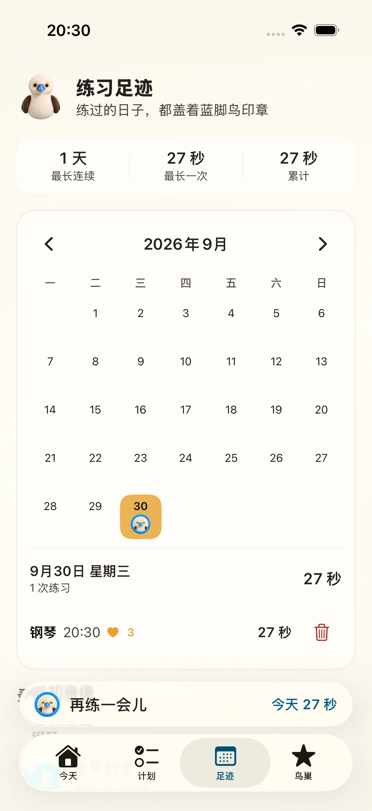
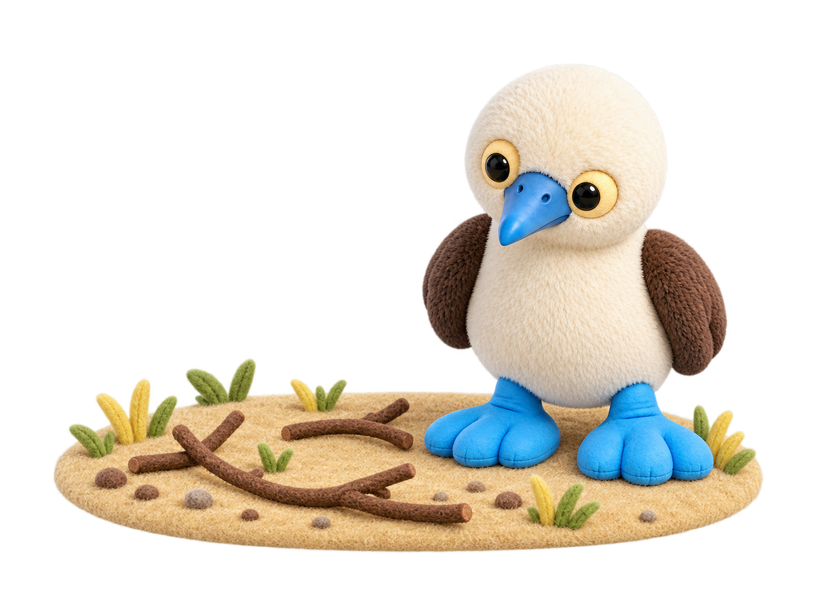
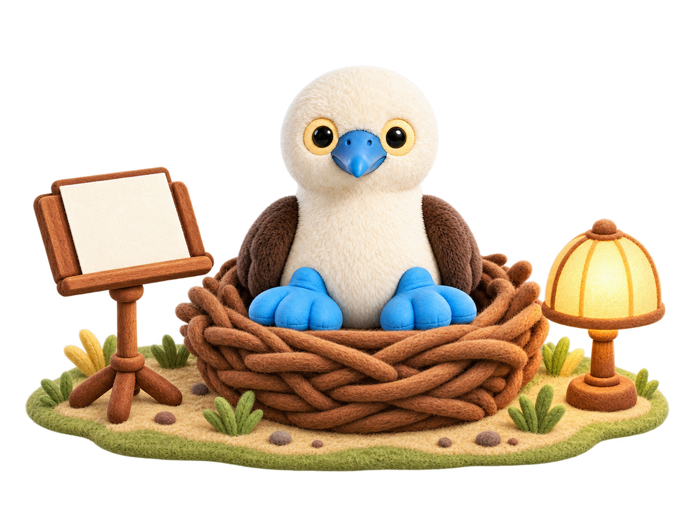
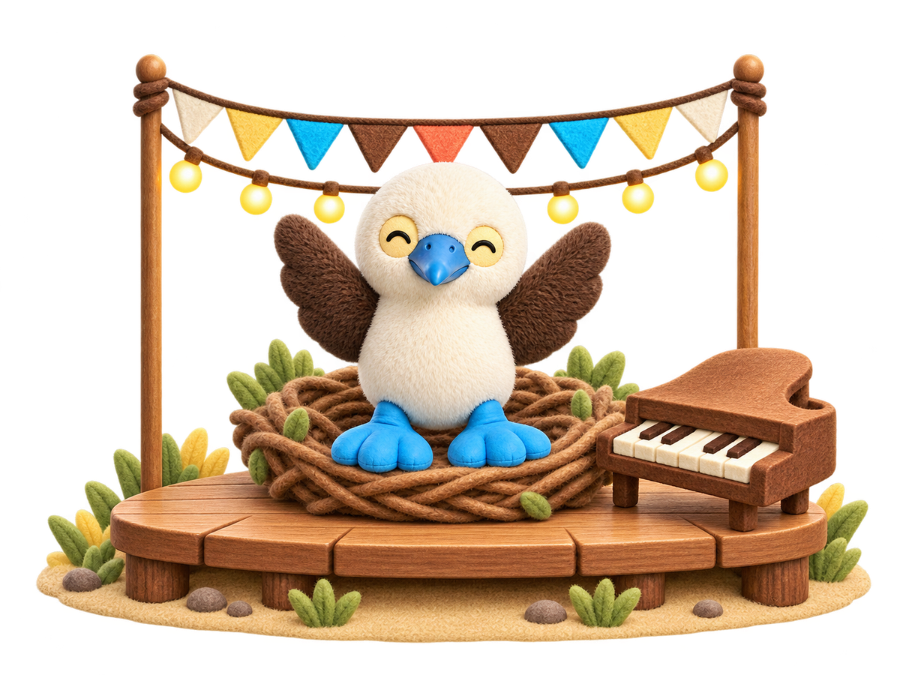
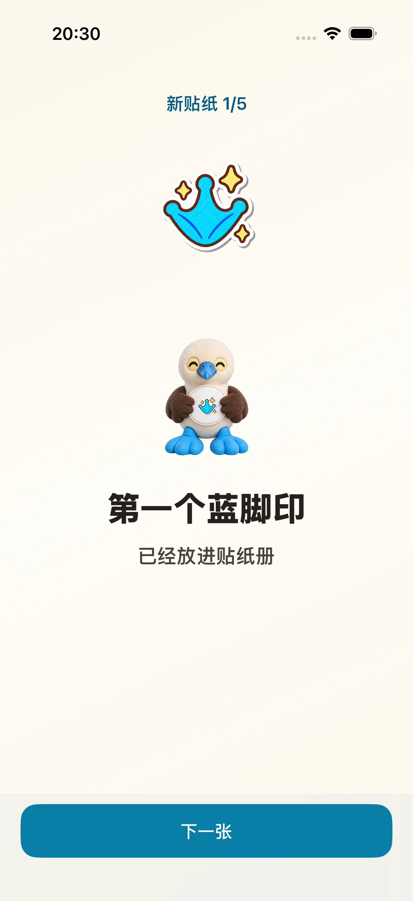
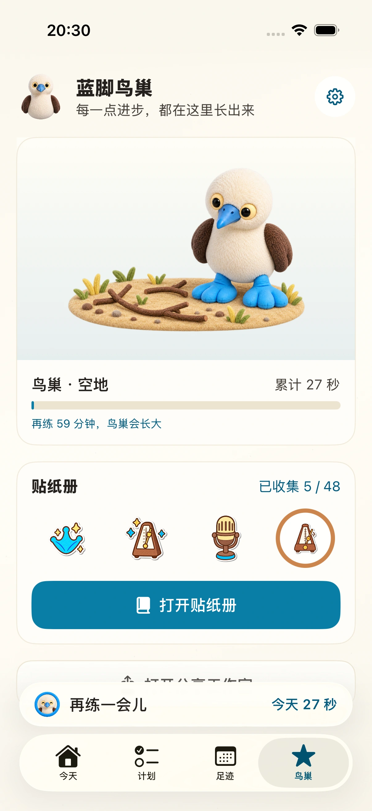

Your first session
Your first practice stamp
Your music practice journal.
Plan your pieces, record each session, and listen back.
Explore the app ↓Coming to iPhone · No account needed

Your timer, metronome, recordings, and notes, all within reach.
Choose a piece.
Give it your attention.
Listen back when you’re done.
App previews show the Chinese interface.
Before you play
Organize your pieces and instruments, and set out what you want to work on this week. Choose a piece from Today and begin.

Plan: weekly goals and pieces
While you practice
Keep your timer, metronome, audio, video, and notes in one place. Pause your session and the beat pauses too.
Practice session
After you play
Find sessions by date and revisit your audio and video. Keep your practice time and recordings together in your journal.

Practice history
Your practice journal
Every saved session becomes part of your story.
Collect stamps and stickers, and watch your bird’s nest grow.

Your first practice stamp

Every session adds something
A little home that grows with time

Bluefoot keeps you company

Look back on how far you’ve come


No account needed. Your practice records stay on your device.
Core practice tools work offline. Searching the online music catalog needs a connection.
Good to know
No. Your records are stored on your device. Open the app to plan and record your practice.
Yes. Core practice features work offline. You only need a connection to search the online music catalog.
Browse sessions by date, replay saved audio and video, and read your practice notes.
We’re preparing the iPhone release. An App Store link will be available here when it launches.
Bluefoot Diary · iPhone
Choose what to play, record today, and listen to your progress.
Coming to iPhoneExplore the practice experience ↗